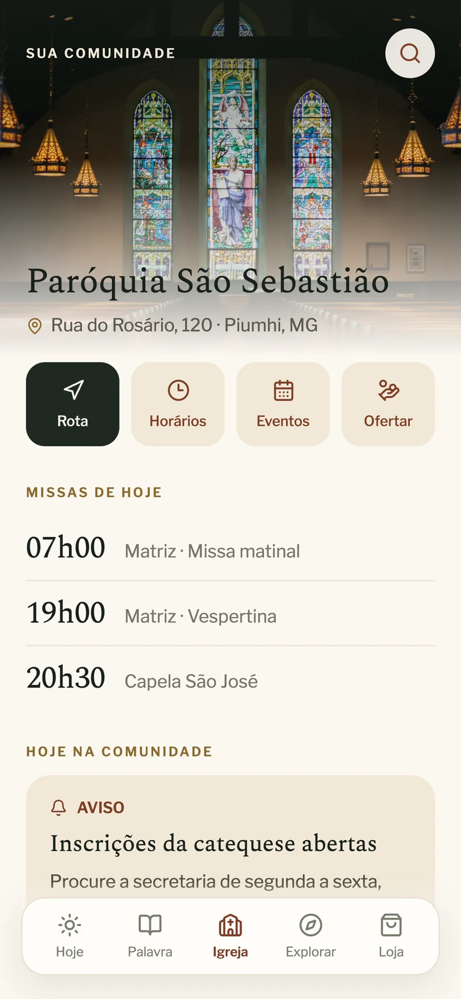
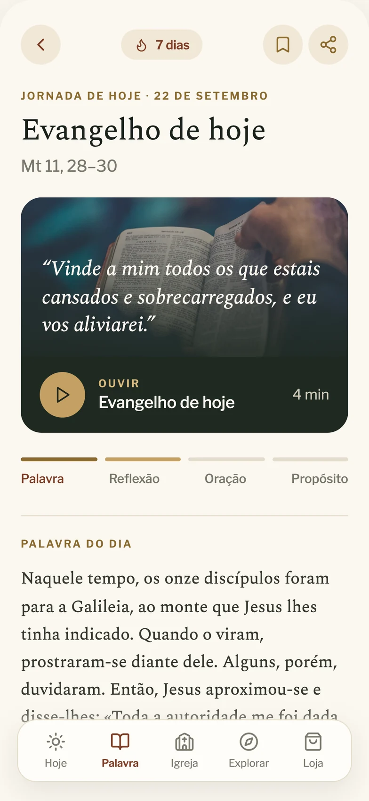
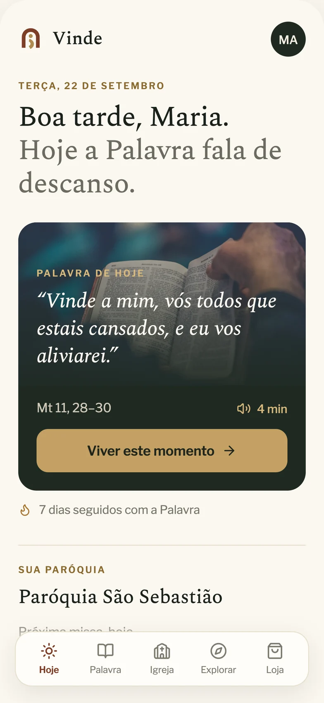
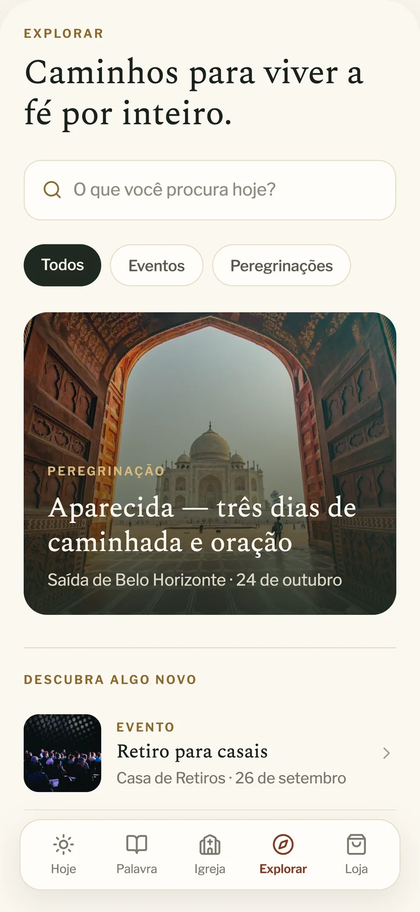
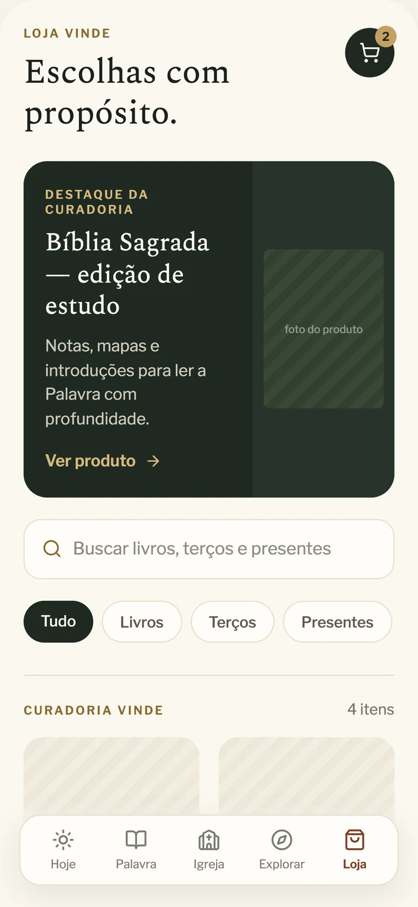
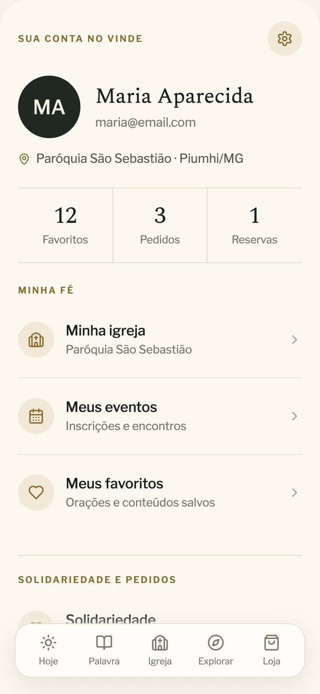

Comunidade
A paróquia, seus avisos e sua gente, sempre por perto.

Fé, comunidade e rotina em um só lugar.
Uma plataforma digital para conectar fé, comunidade, eventos e serviços — da Palavra do dia à vida da paróquia.



Eventos, conteúdos, serviços e doações costumam ficar espalhados em canais diferentes — grupos de mensagem, murais, redes sociais — dificultando a participação e o vínculo com a comunidade.
O Vinde reúne essas experiências em um só lugar, com uma navegação acolhedora e feita para aproximar pessoas da fé e umas das outras.
A paróquia, seus avisos e sua gente, sempre por perto.
Missas, retiros, encontros e peregrinações em um calendário vivo.
Evangelho do dia, reflexão e oração em uma jornada diária.
Loja com curadoria, ofertas e solidariedade de forma simples.



“Vinde a mim, vós todos que estais cansados” — o convite que dá nome ao app virou a experiência inteira: acolhedora, calma e feita para voltar todo dia.
A tela Hoje recebe cada pessoa pelo nome e abre o dia com o Evangelho, a reflexão e a oração — com áudio e uma contagem de dias seguidos que incentiva a constância.
Horários de missa, avisos, eventos e ofertas da comunidade em uma tela só. No perfil, a pessoa acompanha a própria caminhada: igreja, inscrições, favoritos e pedidos.
Retiros, peregrinações e eventos para descobrir, e uma loja com curadoria de livros, terços e presentes — tudo conectado à vida da comunidade.